Projet de recherche
Résonance est mon projet de recherche que je mène actuellement dans le cadre de l’obtention de mon DNSEP Design des Communs à l’ÉSAD Orléans.
Il a pour problématique : La dissolution des gestes manuels dans les pratiques numériquesLes métiers d’art font aujourd’hui l’objet d’une attention particulière et élogieuse. Les artisans qui les exercent sont reconnus pour la qualité d’exécution de leur travail, leur habileté, leur savoir-faire singulier, mais aussi pour leur implication, leur engagement personnel dans leur œuvre. De tout temps, les artisans se sont adaptés. Ils furent même, dans l’histoire des techniques et des arts, des vecteurs d’innovation. L’image traditionnelle de l’artisan le situe le plus souvent dans son atelier, les mains pleines de matière. Mais, face à l’apogée du numérique, cette vision est devenue obsolète. Cet artisan tel qu’on le rencontrait il y a peu, n’existe plus, ou presque plus. Le numérique a su modifier la façon de consommer, de créer, de produire, de vendre, et de s’informer.
En Tunisie, d’où je viens, se perpétuent les gestes habiles des artisans qui portent les traditions et les savoir-faire locaux. J’ai hérité de cet intérêt et de ce rapport familier au matériau terre, qui m’a permis de m’affirmer en tant que céramiste indépendante. En intégrant l’ÉSAD Orléans pour mon master 1, j’ai découvert de nouvelle facette de la céramique par l'impression 3D. En quelques années, la tradition de la céramique, comme l’ensemble des champs de la création, s'est vue interpellée par de nouvelles pratiques de conception et de fabrication rendues possibles par les développements contemporains de la robotique, de la computation et des sciences des matériaux. Ces développements sont prometteurs en termes d’innovation technologique. Ils permettent d’entrevoir de nouvelles manières de concevoir pour répondre aux enjeux industriels, humains et écologiques contemporains. Ils ouvrent également la voie à des pratiques exploratoires dans le champ de la création, actualisant la vision des rapports entre conception numérique et matérialité. Je souhaite pour mon projet mettre en vis à vis l'artisanat et l'industrie, en chevauchant gestes manuels et gestes numériques, afin de mettre en œuvre des processus de conception hybrides d'un point de vue technique.
Travailler sans le numérique est difficile aujourd’hui, l’artisan d’aujourd’hui l’a bien compris : il s’informe, innove, s’adapte, s’équipe dans tous les domaines du numérique, sans pour autant renoncer à son savoir‐faire, aux gestes qui font toute la différence, sans renier sa personnalité, et ses valeurs. Précisément, je parle de l’art de la céramique.
Les céramiques ont connu depuis plus d’une cinquantaine d’années de nouvelles
applications dans les domaines de technologie de pointe.
Ces céramiques jouent un rôle important dans des applications de haute technologie. On les retrouve dans l’impression 3D.
Cette dernière, aussi appelée fabrication additive, est le processus qui consiste à créer des objets physiques par superposition de différentes couches de matière sur la base d’un modèle numérique tridimensionnel. Devenue un réel matériau ancestral, la céramique offre la possibilité de pratiquer plusieurs techniques de création.
De ce fait, pour mon projet personnel, je m'intéresse à l’avenir de l’artisanat, spécifiquement dans le domaine de l’art de la céramique, qui est en pleine expansion. Je m’interroge sur les nombreuses possibilités offertes par le numérique. Mon premier cas d’étude a été l’impression 3D mais je souhaite m’approfondir là-dessus et élargir mes axes de recherches. Depuis longtemps l’artisanat et le design s’accordent dans une relation particulière, aujourd’hui avec l’émergence de process de fabrication numérique et le développement exponentiel des nouvelles technologies un tiers élément vient s’ajouter à l’équation.
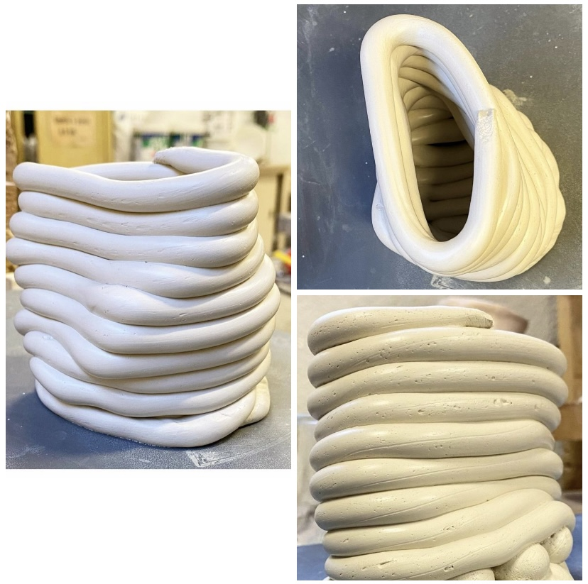Transcription gestuelle d'une conception paramétrique #porcelaine
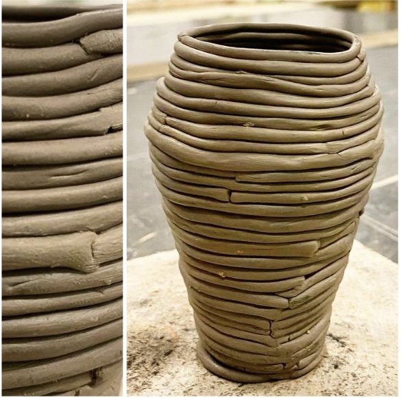Technique de colombin #faïence
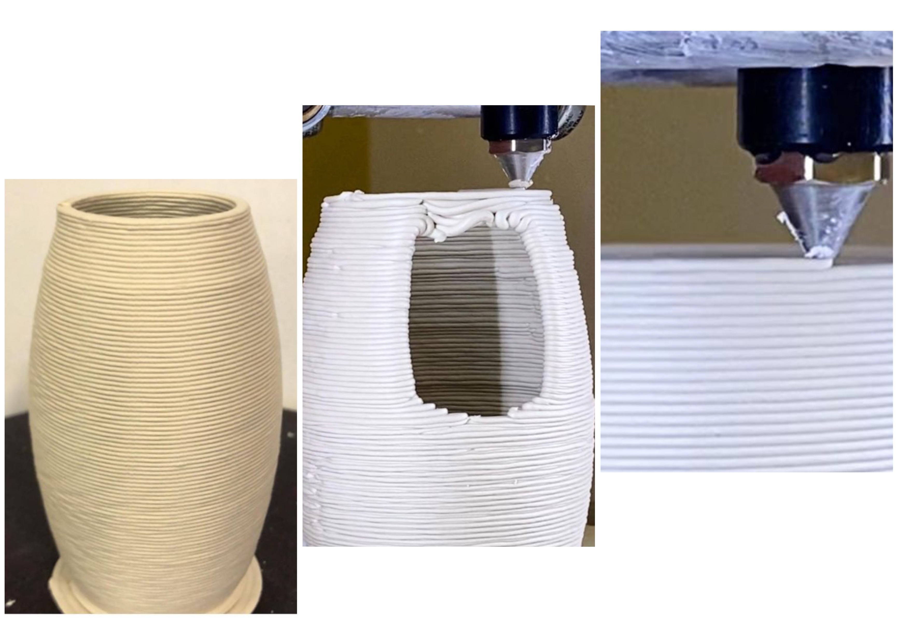
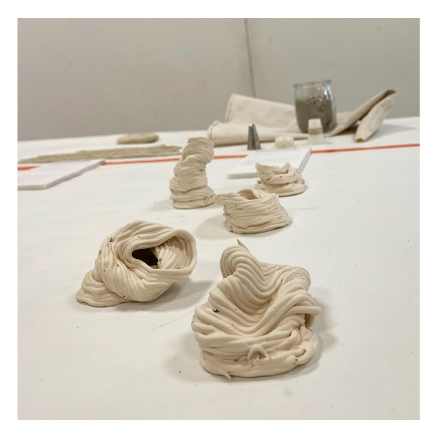Transcription gestuelle avec une douille à poche d'une conception paramétrique
#barbotine faïence
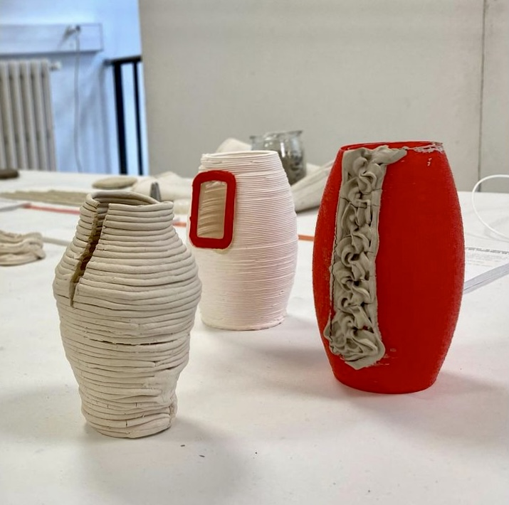 Le numérique comme geste de soin : la réhabilité de l'objet imparfait
Mon mémoire interroge la notion de geste en tant qu’intentionnalité.
Dans la première partie, j’ai mené un travail historiographique mobilisant l’anthropologie et les sciences des techniques.
Puis dans une seconde partie, j’ai cherché à revisiter cette même notion, au prisme des problématiques propres au numérique.
Comment à l’ère de la robotique et de la computation, le geste se déploie au sein du processus de création ?
Par une expérimentation documentée et enrichie par
la troisième partie de ce mémoire, j’engage mon propre corps comme réponse à la dissolution du geste dans
les pratiques numériques.
J’entreprends une démarche
expérimentale par la pratique afin d’activer des processus hybrides me permettant de créer des dialogues entre deux champs de pratique différents.
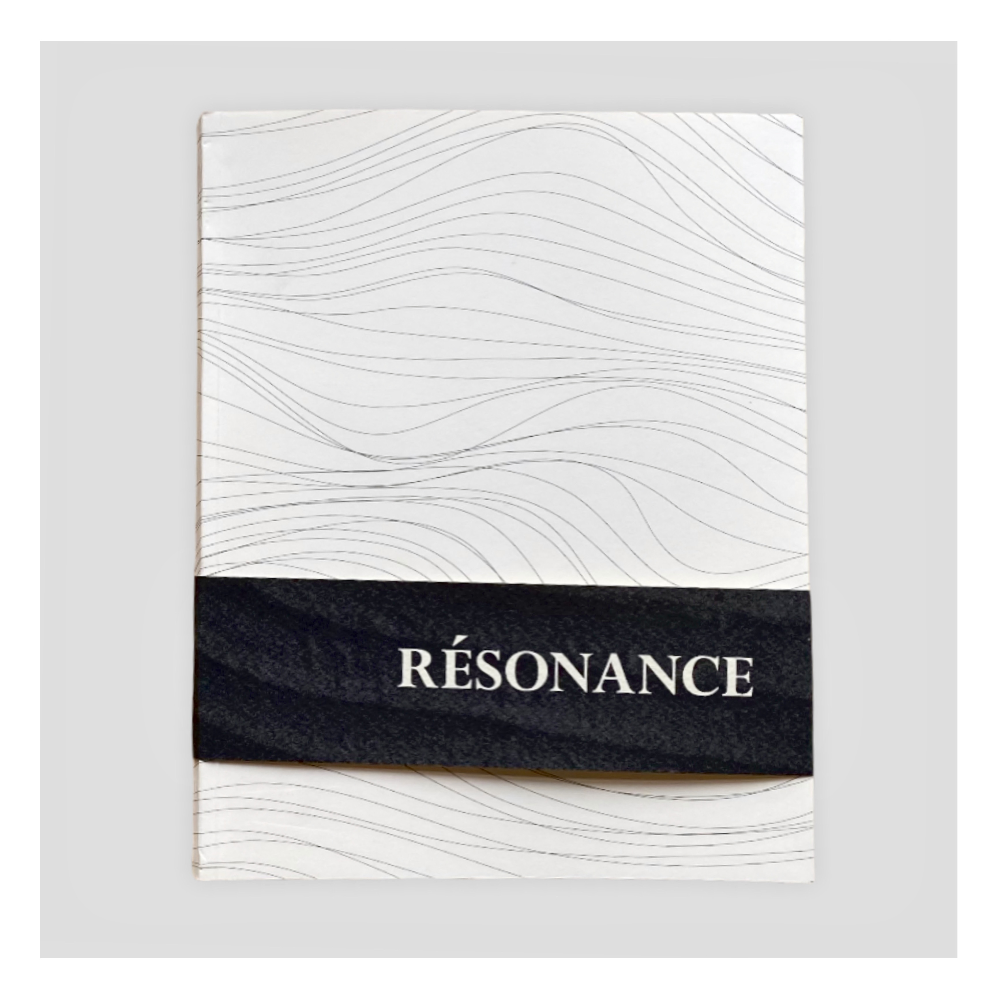Mémoire DNSEP Design des Communs
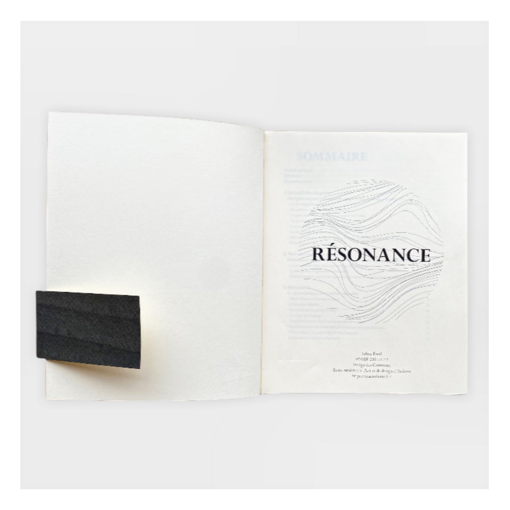
Mon projet permet de créer des processus de conception inédits. À travers ce dispositif distribué, la posture du designer, s'incarne en une négociation. Dès lors, chaque geste émanant
de la machine ou de la main, s’y exprime pour faire exister la singularité propre à chaque technique. De part ma position de designer, je cherche donc à composer et à articuler des processus
de conception innovants, qui façonnent des objets par hybridation des gestes dans un rapport d’écoute et d’attention à l’ensemble des entités qui le constitue. Ces différents champs de savoirs
et de disciplines m’ont permis de rentrer en dialogue et en résonance avec l’ensemble des entités qui composent le processus : la machine, le matériau, l’outil, les actions entreprises et même le lieu de production.


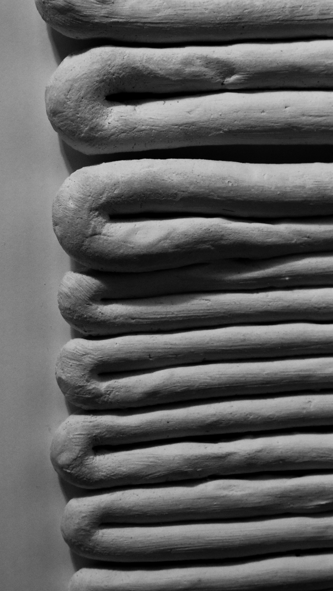
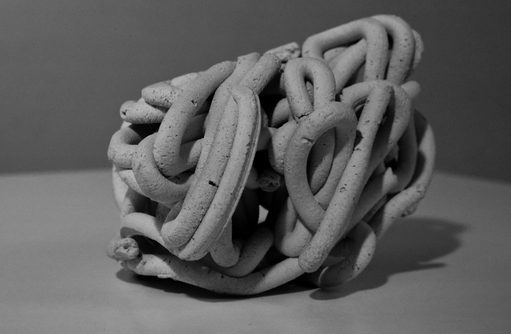
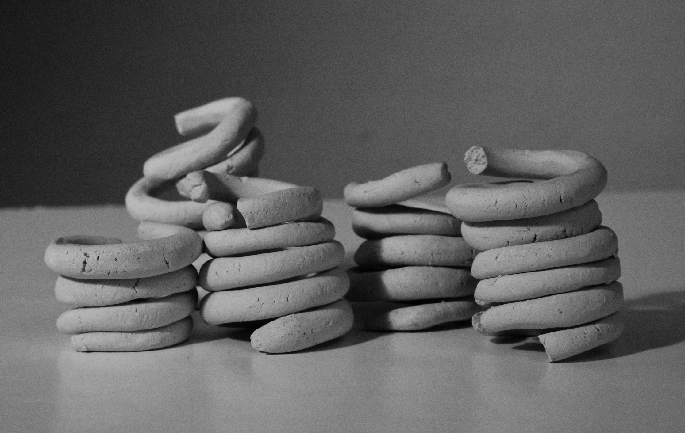
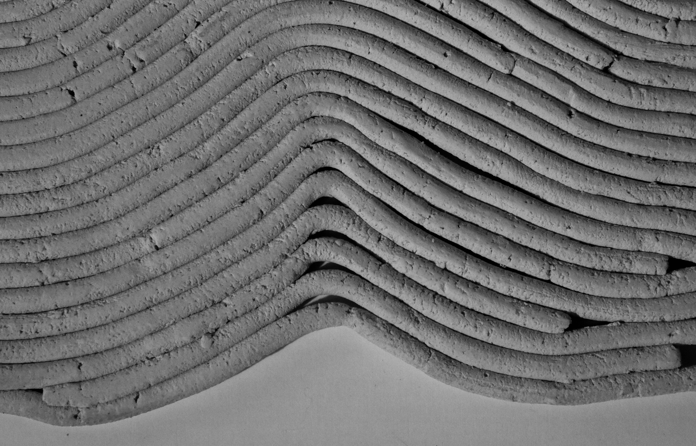
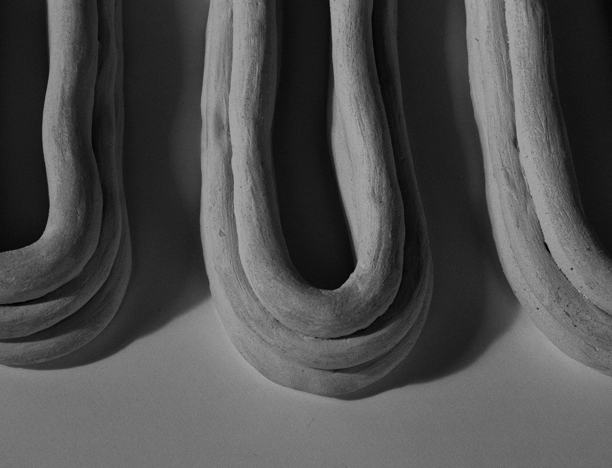
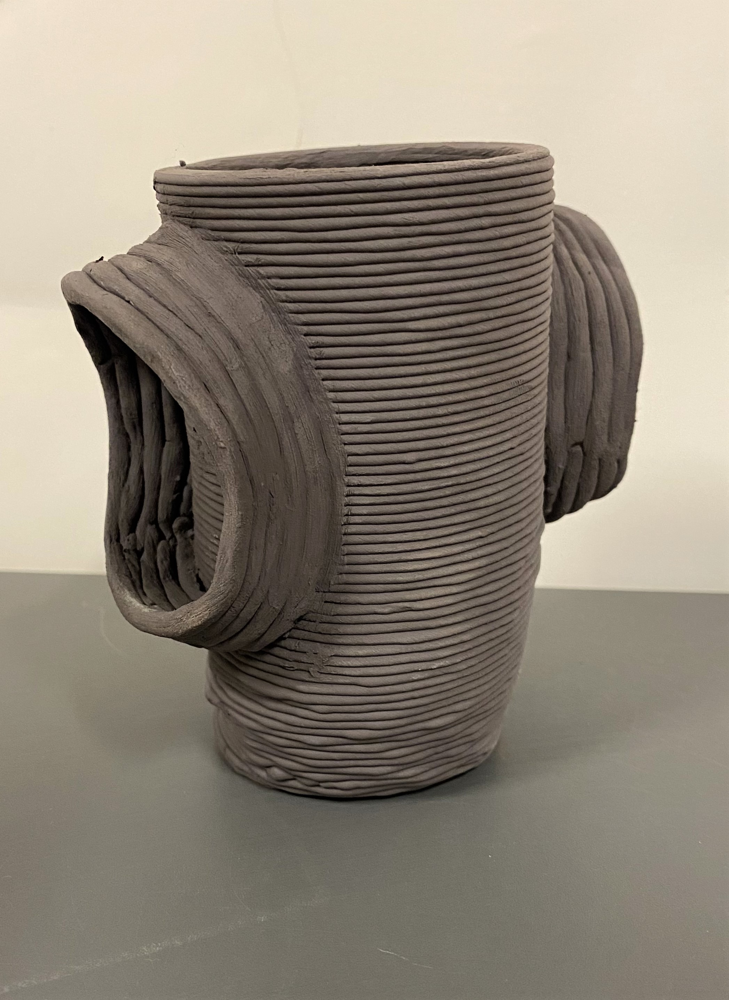Expérimentation : objet hybride - technique de colombin + impression 3D
Vidéo 1 : Tout geste est une technique du corps : étude du langage gestuel
Vidéo 2 : L’absorption des gestes par la machine : étude du langage de la machine